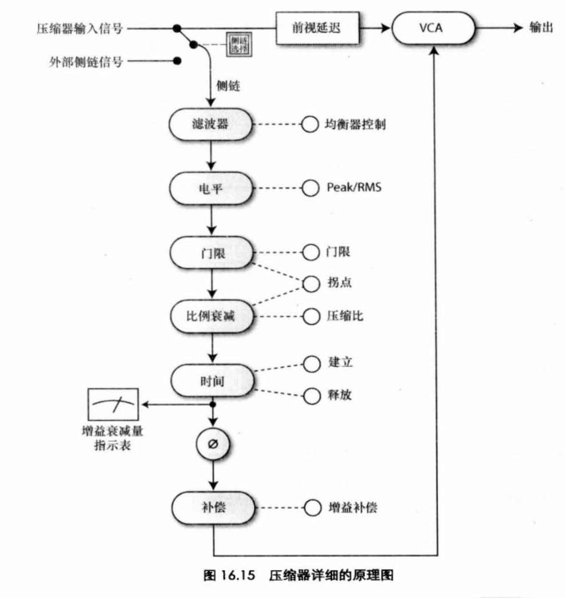

混音指南读书笔记
混音指南
相位
- 同相
- 异相
- 反相
- 哈斯效应，两个相似波形延时>40ms才能察觉 -> 哈斯窗口，只关心在窗口内的相位问题（否则就不是小问题了）
- 可能产生梳状滤波效应
- 哈斯技巧：
- 两个先后从不同方向上发出的声音的生源方向由前一个声音方向决定的的条件是：
- 后一个声音比前一个声音晚发出 1~35ms
- 后一个声音的响度比前一个声音的响度低 10dB 以上。
- 哈斯技巧就是简单的将一个原始信号分配到立体声输出的一个声道上，而将它的幻像复制信号延时1~35 ms，分配到立体声输出的另一个声道上而产生的
- 立体声信号合并为单声道时必然会产生梳状滤波效应（高频损失）
- 两种方法加强：
- 在幻像复制信号的声道上加入一个滤波器——通常是一个低通滤波器——能够让声音变得更自然，同时还可能在混音被合并为单声道的时候减少梳状滤波器效应。这种方法在使用哈斯技巧获得更真实的声像时特别有用
- 当使用哈斯技巧来增加声像的丰满度时，我们可以在幻像复制信号声道上载入延时器以后，通过比较小的调制速度和调制深度来调制延时器的延时时间。这会使得处理后的声像变得更大，更为丰满
- 不要用太多，会让清晰度变差
- 界外立体声：只是一种特殊效果，偶尔使用，而且用在不重要的乐器上
推子
- 10dB为人耳主观感觉到的响度加倍或者减半的变化量（对哦，是lg）
- 原则：
- 保证一些通道上的额外增益区间始终可用
- 从音量最大的轨道入手
声像
（我才发现书里的示意图上画的是一个俯视的人，而不是一个企鹅…）
（dummy head是仿真头的意思）
- 当立体声信号被合并为单声道的时候，原本声像位于中间的声音大小不受影响，而声像位于一侧的声音下降3dB
- 一般bass和底鼓放在中央
- 在混音中，中央位置通常是乐器最为集中的位置；声像需要设置在中央的乐器，其声像其实可以设置在稍微偏离中央的位置上
- 在声场的每一个位置上应该都有乐器声像存在，不会出现声像空洞或者声像堆积
- 声像与画面中声源位置保持一致
- 混音的中央位置是声像清晰度最差的区域，而极左极右却能够提供清晰度最佳的声像定位，会听上去更清晰、离我们更近
- 甚至还有为豪华汽车做的声像设置，还得区分驾驶位在哪侧（hhh）
EQ
- 目的：通过限制(?)频率让不同乐器都能被清晰的听见
- 人：20hz-20khz
- 标准电贝斯最低的E弦：41hz；中央C：262hz
- 频谱成分：
- 基波(Fundamental)：一个声音中最低的频率。基波的频率决定了声音的音调。
- 谐波(Harmonics)：频率为基波频率整数倍的频率成分。例如，如果一个基波为100Hz，那么它的谐波就是200HZ、300HZ、400Hz、500Hz，以此类推。谐波是声音极为重要的组成部分——如果说基波能够决定声音的音调，那么谐波就能够赋予声音以色彩。
- 泛音(Overtones)：频率不一定是基波频率整数倍的频率成分。例如，一个150Hz的声音,就是一个100Hz 基波的泛音。像军鼓这样的乐器，在音调上显得非常不清晰同时产生了大量的噪音——这就是一种典型的泛音占主要内容的声音形态。
- 共振峰(Formants)：由物理共振产生的频率,不会随着音调的变化而产生变化。共振峰是对声音的特征起主要作用的因素——例如，我们能够识别每一个人的声音，就主要依靠他们各自的共振峰。
- 频段：
- 次声频段(Sub sonic)(20Hz 以下)：唯一一种在这个频段上具有能量的乐器是大型的管风琴，它们只能在世界上为数不多的几个教堂中看到。这个频段的声音是不能被人听到的，但是它能够被感受到。尽管这个频段在电影的爆炸音效和雷声的制作中能够用得上，但是在音乐处理中不会使用到这个频段。
- 低频段最低部分(Low bass)(20~60Hz)：这个部分就是人耳可闻的最低的频段处于这个频段的声音，更多的是被感受到，而不是被听到，其感觉主要是力度，而不是音调。底鼓和贝司的基波通常位于这个频段，该频段也经常用来为底鼓增加次低音。钢琴也可以在这个频段产生一部分声音。
- 低频段中间部分(Mid bass)(60~120Hz)：在这个频段内，我们才开始获得音调的感觉。这个部分主要与力度(Power) 相关，主要是贝司和底鼓。
- 低频段较高部分(Upper bass)(120Hz~250Hz)：大部分乐器的基波都位于这个频段。这也是我们能够改变乐器自然音调 (Natural tone)的频段。
- 中低频段(Low-mids)(250Hz~2kHz)：这个频段基本上包括了各种乐器中最为重要的低次谐波，其音质(Meat)、色彩(Color)和大部分音色(Timbre)都由这个频段决定。
- 中高频段(High-mids)(2k~6kHz)：我们人耳对这个频段的感受是最灵敏的(根据等响曲线)，这个频段包含复杂的谐波成分(Complex harmonics)，与响度(Loudness)清晰度(Definition)、临场感(Presence)和语言的可懂度(Speech intelligibility)相关。
- 高频段(Highs)(6k~20kHz)：大部分乐器在这个频段上都只有很少的能量，但是它依然是一个很重要的频段。这个频段主要与光泽(Brilliance)、亮色(Sparkle)和空气感(Air) 相关。
- 滤波器：只是衰减，不是完全去除部分信号
- 通过式：HPF、LPF
- 搁架式：能衰减 + 提升
- 参量式：比如Fab filter的Q3
- 均衡器的增益越大，形成的相移越严重；提升操作会更有可能产生削波 -> 多使用衰减
- 不明觉厉（这俩圈应该是作者自己画上去的）
- 大脑能够重建信号中丢失的基频（这里原文的翻译…无力吐槽），所以可以剧烈使用高频滤波器
- 军鼓：
- 通鼓：
- 镲：
- bass：
动态范围处理器
- 60dB：听不见的声音 ~ 能清晰的听到的声音
- 抽吸效应：可闻的电平快速变化（这本中译是这么说的，理解无能，看到后面感觉应该是audible），大概是高电平的快速变化的意思
- 喘息效应：噪声的电平快速变化，通常是低电平的变化
压缩器
“恐怕是最容易被误用或者过量食用的设备”（是吧，你恨不得每个轨道都压缩）
得在保留动态的情况下做压缩

软拐点：适合人声等圆润的处理
硬拐点：适合凸显压缩效果
压缩比：
- 控制电平：10:1
- 平衡电平：压缩比的门限在信号的平均电平左右，压缩比3:1
- 提高响度：1.4:1
门限越低，压缩比就越低
短的建立时间和释放时间会导致低频失真，而且会产生click声，较长的会削弱信号的高频，可以通过较长的保持时间解决
短释放可以造成抽吸（啊？！我一直用错了难道，我一直以为是短建立…等会儿试试）
侧链压缩
- 低频信号比高频信号更容易引发压缩器的反应，会使被压缩的乐器听上去更浑浊
- 对侧链信号使用高通滤波器能够让压缩器对宽频带信号的处理更加一致
- 可以改变被压缩乐器的音色
- 动态平衡
提升响度：
压缩器设置顺序：门限 -> 压缩比 -> 建立时间和释放时间
对于与压缩相关的均衡，我们应该将均衡器放在压缩器前面。而在其他情况下，均衡器应该位于压缩器后面。这包括使用均衡器来改变乐器的音色，或者使用均衡器来对由压缩器造成的音色变化进行补偿。
蒟蒻远离母线压缩
限制器
读不动了，明天再说（这不比毕设文献好读多了[苦涩]）
- 限制信号的峰值
- 为了实现响度最大化
噪声门
- = 门处理器（和压缩器一样是动态范围处理器）
- 为了去除噪声、加紧鼓声、增加冲击力、实现动态变化
- 我们可以使用噪声门上的任何可用功能来提高噪声门处理的效果。
- 侧链均衡能够让我们通过衰减其主要的频率成分来抑制串音
- 前视功能能够让我们保留大部分乐器原始的起振过程
- 滞后区间则能让我们保留大部分的乐器原始的衰减过程
- 噪声门处理中一个主要的难题就是如何保持乐器原有的音色，最重要的是它的原始起振和衰减过程。
- 混音基本概念：底鼓用于制造低频的节奏力度，bass用于填充底鼓敲击声之间的低频空缺，并作为和声根音存在
扩展器
- 把被压缩器处理过的压缩器扩展回去（压扩系统 compander）
- 噪声门的替代品，更圆滑
闪避处理器
- 让我尝试搞懂它和侧链压缩的区别
- 哦，闪避处理器一刀切，压缩器是动态变化的，闪避处理器的增益衰减量固定
延时器
- 0~20ms：像这类非常短的延时，会让干信号和湿信号按照单声道方式混合在一起时产生梳状滤波器效应，并改变乐器的音色。这类短延时的用途通常是对延时时间进行调制。而如果干信号与湿信号的声像分别被设置在极左和极右，那么得到的结果将符合哈斯效应。
- 20~60ms：这个范围内的延时通常会被感受为加倍(Doubling)效果。但是，这是一种在效果上最为薄弱的加倍，通过对延时时间进行调制可以改善其效果。
- 60~100ms：一个大约比60ms 更长的延时会让人耳感受到清楚的回声。不过在干信号和湿信号之间，这么短的时间差会导致称为击掌反射(Slapback)的延时出现一间隔非常短的连续回声，通常这是由声音在两面平行的墙壁之间反射所造成的。击掌反射延时会被作为一种创造性的效果来使用(过去比现在用得更多)。由于击掌反射延时可以通过磁带延时设备很容易的制造出来，因此它在数字延时器诞生之前被使用得极为广泛，在20世纪60年代之后的很多混音作品中，都可以找到这种延时效果。
- 100ms至四分音符：这种长度的延时就是大多数人所说的延时(Delay)或者回声(Echo)，这里的每一个回声之间的间隔都足以让它们被明确的区分开来。对一首节奏为120BPM的歌曲来说，一个四分音符的长度一般应该为500ms。处于这个范围内的延时时间是最为常见的。
- 四分音符及四分音符以上：这种长度的长延时会被感觉是大峡谷回声。
- 可以增加空间感，但又不像混响那样会把声音推向声场后方
其他调制工具
颤音
自动音轨加倍（ADT）
合唱/齐奏
镶边（flanging）
移相
震音
混响器
明天再来，毕设要紧！
- 竟然还有专门的混响室

- trance竟然使用的是空间很小的预制
- 直混比
- 混响时间：decay time
- 混响可能对节奏产生影响
- 扩散：diffusion
- 阻尼：damping
- 高频阻尼可以产生更为自然的混响效果，也可以用来消除混响音尾中所残留的我们所不需要的噪声。
- 低频阻尼可以让混响起产生的混响模拟木质材料；原始的冲击感
- 混响的高频成分能够影响到它本身是否变得突出，而低频成分则关系到它所带来的温暖感和空间感大小
- 低密度好像可以搞出奇怪的颤音来
其它工具
移调处理器和谐波发生器
- 将电贝司的声音与人工制造的二次谐波(音调提高一个八度)混合在一起，可以让它的声音更为清晰。我们还可以在电贝司信号中加入三次谐波(音调提高一个八度外加纯五度，或者是19个半音)及四次谐波(音调提高两个八度)，并改变它们之间的电平比例，来塑造电贝司的音色。此外，我们还可以将电贝司原始信号与音调降低一个八度的信号混合在一起。这能够增强电贝司的低频能量和力度。事实上，很多贝司增强器都会用到这种处理方式。
激励器和增强器
- 可能产生油炸效应或者overcooking效应
瞬态控制器
- 向上扩展器和向下压缩器的扩展体
dnb风格
（目前只对这个感兴趣，techno或许会看看）
但很可惜我目前没有找到这首曲子…我得再查查。
All articles in this blog are licensed under CC BY-NC-SA 4.0 unless stating additionally.
Comment
ValineDisqus